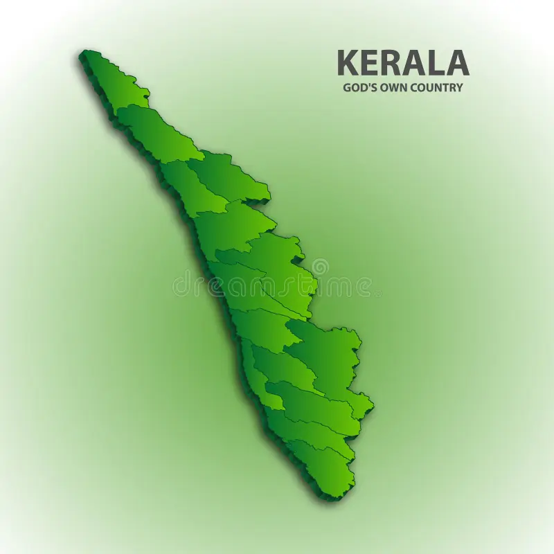

Kerala is one of the 28 states of India . Kerala is a small state in the southwestern corner of the country. It is located between 8° 17' 30" and 12° 47'40" north latitude and 74° 27' 47" and 77° 37' 12" east longitude . It is bordered by the states of Tamil Nadu to the south and east , Karnataka to the north, and the Arabian Sea to the west . The borders of Kerala range from 11 to 121 km wide and 580 km long. The Malayalam- speaking people live in the present-day Kanyakumari district of Tamil Nadu and Shencotta in the Tenkasi district .The state of Kerala was formed in 1956 on the basis of language, comprising the areas of Travancore, erstwhile Kochi , Gudalur taluk of the erstwhile Madras state, Kunda taluk, Top Slip, Attappadi forests east of Anaketti (now Nilgiris district and parts of Coimbatore district), Malabar district excluding the Attappadi forests east of Anaketti (now parts of Nilgiris district and Coimbatore district), [ 4 ] and Kasaragod taluk (now Kasaragod district ), which includes Tulunadu in Dakshina Kannada district of the same state . The state is rich in diverse landscapes and has been included in the list of the 50 most visited places in the world by National Geographic Traveler magazine. Kerala is known as God's Own Country. [k] [ 5 ] The capital of Kerala, where Malayalam is the main language, is Thiruvananthapuram . Other major cities are Kochi (the commercial capital), Kozhikode , Kollam , Thrissur , Kannur , and Kottayam . Kerala is famous for its Kalaripayattu , Kathakali , Padayani , Ayurveda , and Theyyam Mappilapattu. SpicesKerala is also famous for its Malayalis working abroad. Malayalis are an important part of Kerala's economy.
